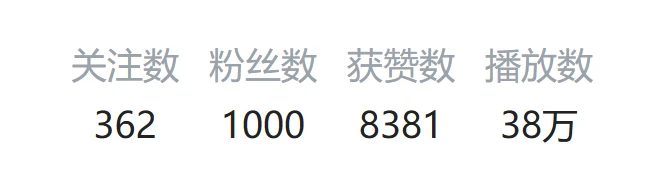
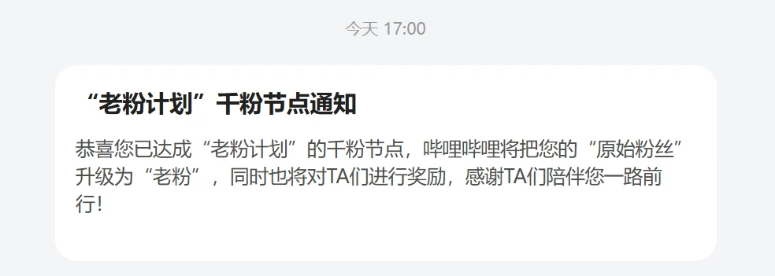
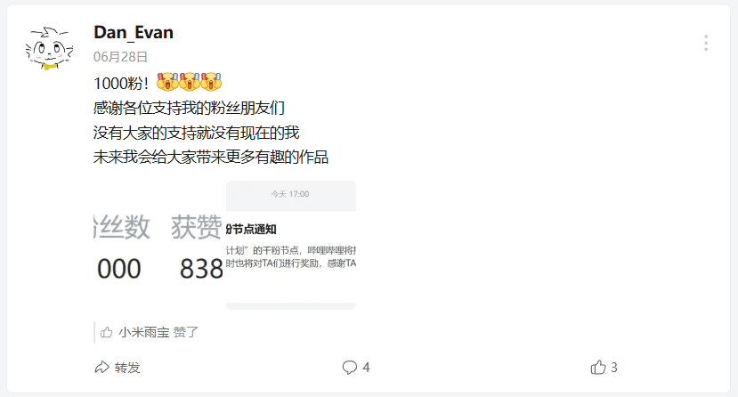

Dan_Evan's Website
2024.11.09 | 作者：Dan_Evan
你好，我是Dan_Evan
> 如果你是我的B站粉丝，可能要问：
> “Dan_Evan的Github账号怎么叫ElofHew？”
> 其实，“ElofHew”这个名字是我的游戏名，但是在Github上好像有人已经注册了“Dan_Evan”> 这个名字，所以我就用我的游戏名ElofHew来代替了。
我是一名初中生，今年(2024年)15岁，从小我就很喜欢玩Minecraft这款游戏，也很喜欢钻研有关计算机的东西。
我在小学的时候学习过基于前端技术的Scratch，也就是我们常说的图形化(积木)编程，后来我就开始接触编程，开始学习Python。
> PS：我已经写出来了个人项目“神秘猜数字小游戏”。
> 你可以在Github上找到它：https://github.com/ElofHew/DE_numguess
后来我学习了视频制作，并最早2020年在抖音发一些好像“毫无意义”的视频，
在2023年年初，我开始在B站发布“长视频”。
> 第一个“正儿八经”做的视频：
> https://www.bilibili.com/video/BV16y421a74q
这期视频做的也很潦草，也几乎没多少人看，但我还是一直坚持着。
直到3月16日，我在B站上发布了一个“软件推荐”视频：
https://www.bilibili.com/video/BV1bj421o7cp
这期视频我其实做的非常仓促，本来该有20个软件，但是我急于去学校，所以就拆成了两部分。
但是当我还在学校里的时候，我拿我的手表上面的“哔哩终端”这款第三方B站客户端，看我的个人主页的时候，我突然发现，这个视频播放破4000了，
我当时就惊呆了，这么多人看我的视频，我十分激动。
在今年暑假前夕，6月28日，我的粉丝数破1000：



我很开心，因为这也让我有动力继续做视频。
现在我的粉丝数为2700左右(2024.11.09)。
我很感谢支持我的粉丝们，也很感谢我的朋友们对我的帮助和部分支持。
以后我会给大家更新更多有趣的视频。
最后，祝大家天天开心，事事顺心！